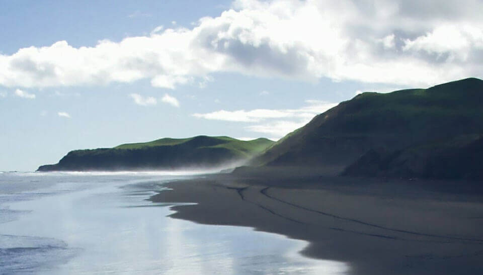

The mountain
The lodge looks toward the hills that sit over Waimaunga.
Moonlodge is accommodation and an art studio in Waimaunga, Whaingaroa / Raglan. Guests need to understand the stay, the studio, and what is nearby, including the west coast and Bridal Veil Falls.
The coastal hero and the quiet type stay. Accommodation, the art studio, and local attractions are separate sections so each one can be read on its own. Nightly rates are not shown, because this page does not have them.
Design recreation for this portfolio, using Moonlodge’s own photographs. It does not take bookings.
Moonlodge sits in Waimaunga, Whaingaroa / Raglan: mountain behind it, wild west-coast beaches, and Wairenga / Bridal Veil Falls within reach. It is accommodation and an art studio, for people who want time and a bit of quiet.

A stay aimed at rest rather than a packed itinerary. The original site pointed guests here before the art studio and the local sights.
The studio is part of the same visit: room to make something, not only a bed for the night. Details of what is set up in the studio are left to the hosts.
The lodge looks toward the hills that sit over Waimaunga.
Wild beaches on the Whaingaroa coast.
Wairenga / Bridal Veil Falls, a short trip from the lodge.